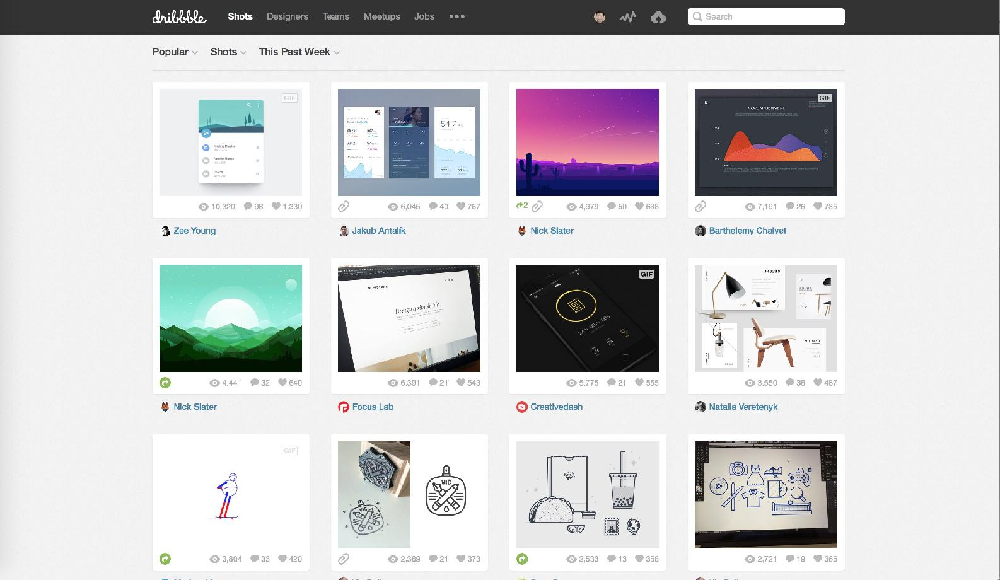
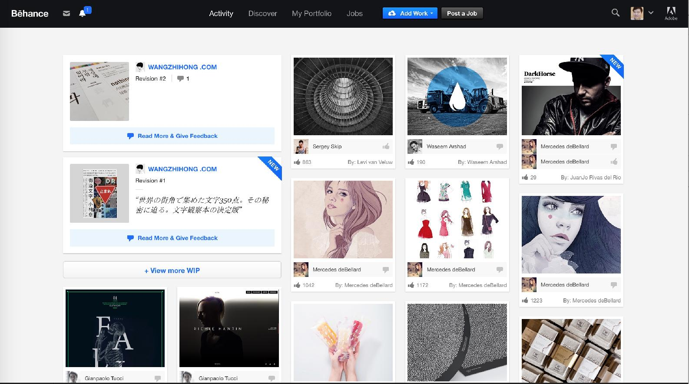
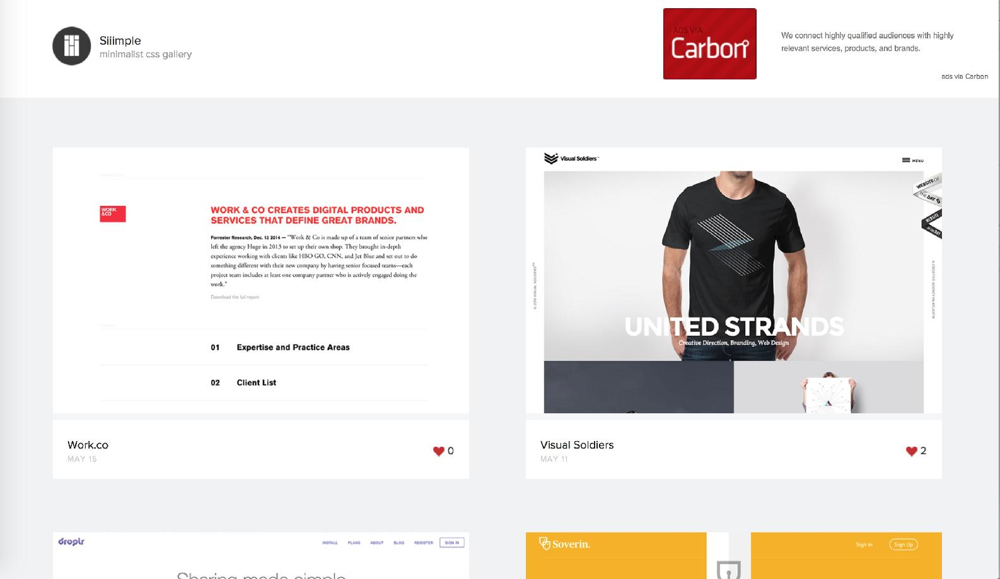
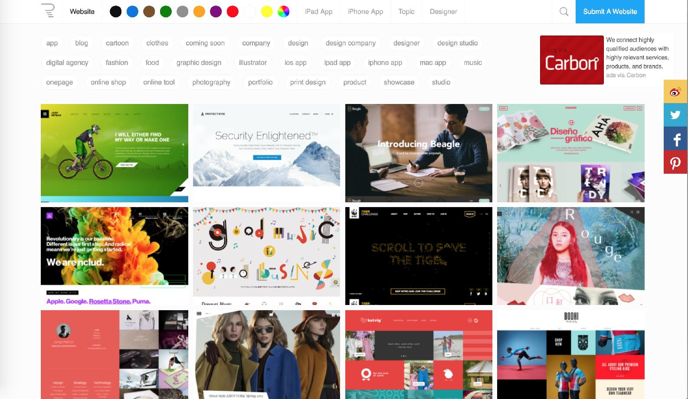
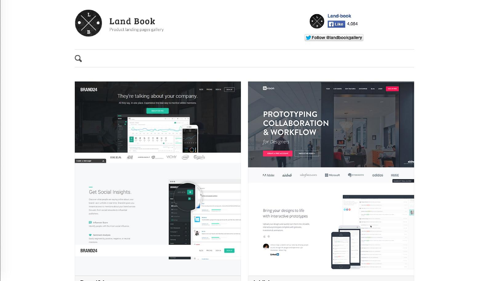
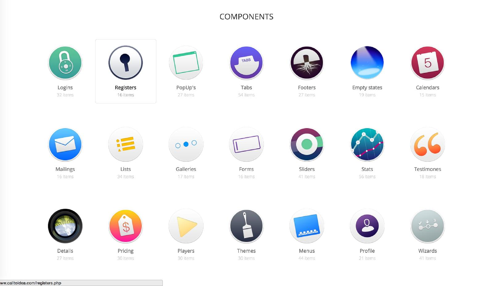
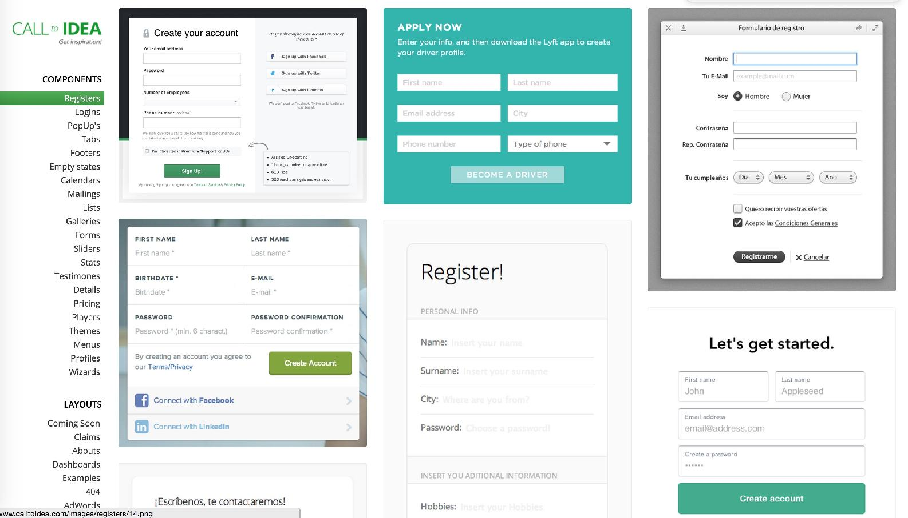
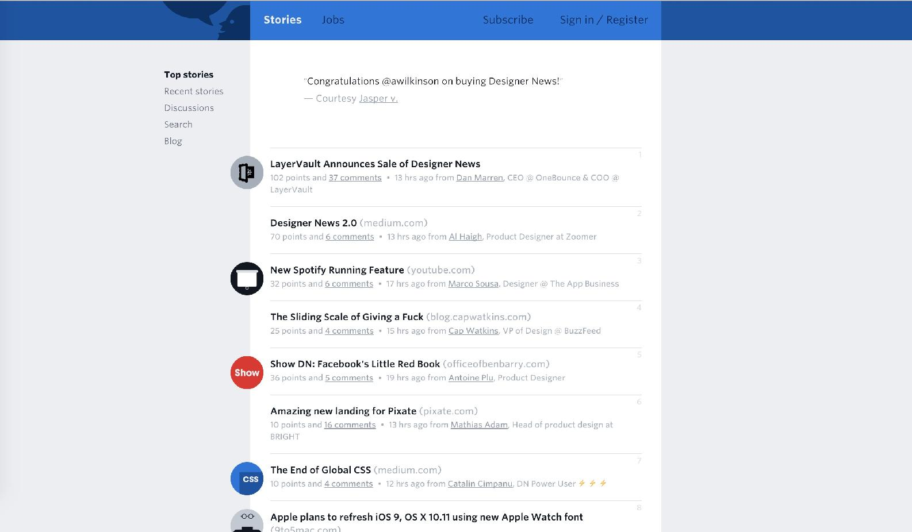

对设计的学习来说，除了基本的理论，积累大量的素材更为重要。
“当你手里有个锤子的时候，你看什么都是钉子。” 这句话正是在说方法单一的后果。当你积累了大量的设计语言，以及元素的组合方式后，你手里就不再只有一把锤子。融合你生活中对于美好设计的体验，属于你自己的优秀设计也便会自然诞生。
Dribbble 是在设计师中非常流行的一个分享设计的社区，每次打开都会有许多让人惊叹的设计，不过惊叹之余，你也可以对这些设计进行更深入的思考——当这些设计应用到真实环境中，是否真的能增加体验。

Behance 这个社区更为专业，已经被 Adobe 收购。它里面的作品完成度都相当高，覆盖的范围也更加广泛。

这是一个专门收集极简主义网站设计的网站，筛选的作品都很独特并且具有启发性。

Reeoo 也是一个专门收集优秀网页设计网站，提供了详细的分类目录，从 App，艺术，卡通到摄影，体育一应具全，还可以根据颜色的主题筛选，非常好用。

LandBook 专门收集了优秀的 landing page 页面，品类齐全，值得时不时地看一看。

Call to idea 是一个以类别为线索收集各种设计的网站，专业，精美，是激发灵感的好地方。

把同类别的优秀设计统观一遍，你就能发现很多共通之处。

Designer News 是全世界最热闹的设计师的资讯社区，新的设计想法，新的产品，都会在这里进行讨论。

创造性的活动并不是单纯的将时间耗在上面就可以完成出优秀的结果。大脑的运算不同于电脑，潜意识的部分你无法控制，然而它的速度却远远超乎你的想象。
在大量收集，学习了多样的设计之后，不妨离开书桌，出去跑跑步，游个泳，完全忘记工作的事情。这时候你的潜意识会在后台归纳组织你的素材，这些素材可能来自于你半生的积累，数百万条记录在飞快的组织着，等你彻底放松回来后，最终的结果可能就是 —— “我是怎么想到这个点子的，我真是个天才。”